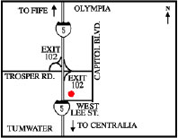

Organizer: Eric Vigoren
Date: Saturday-Sunday, September 16-17, 2006
Start Time: 06:00AM Saturday 9/16
Finish Time: 10:00 PM Sunday 9/17
Start Location: Motel 6, Tumwater (#77)
Address: : 400 W Lee St, Tumwater, WA 98501
Phone: (360) 754-7320
Driving instruction to Motel 6:
Traveling on I-5 North: Exit #102 at the top of the ramp turn right on Trosper Road. At the light turn right onto Capitol Boulevard. At the next light turn right onto Lee Street. The Motel 6 is on the right.Traveling on I-5 South: Exit #102 turn left off of the freeway onto Trosper Road. Turn right on Capitol Boulevard. At the next light turn right onto Lee Street. The Motel 6 is on the right side of the road.
Entry Fee: $40 SIR members. $50 non-members. ACP 600k medal is an additional $8 (optional). Please make all entry and membership fees payable to SIR.
Please download and fill out this Entry Form in advance.
If you are planning on riding this 600 km brevet, please send an email to Eric Vigoren and let him know. We are trying to get a rough estimate of participants for the brevet so that we can plan for hotel rooms and overnight baggage transport. (As a courtesy, please think small for your overnight drop bag.)
Fee Structure Explanation for joining SIR:
You don't have to be a SIR member to paticipate, but we encourage you to join us! The cost is only $10.00 to join SIR. Please fill out the SIR Membership Form. Also, all SIR members must join Randonneurs USA (RUSA) to ride. RUSA cost is $20.00 annually.
Rider List Updated regularly!
Equipment needed: Helmets are required on all SIR events. Remember riding gear for inclement weather, bike tools, spare tubes, and food/water for yourself. All riders should be familiar with the SIR Brevet Rider Expectations.
Headlights (white and clearly visible from 150 yards to oncoming traffic), tail lights, and red rear reflectors are required. Note that many taillights are also legal reflectors. These may be checked and riders disqualified if they do not function. Functional lights must be mounted on bike at all times. Lights must be operating at night on each bike in a group. Blinking taillights are permitted, but note that these may bother other riders.
Reflective vests and leg bands are required for riding at night or during poor visibility. This is for your safety and others in the group.
Hand held flashlights or helmet mounted lights are recommended for repairs made in the dark.
As a courtesy to other riders, fenders (with 1/4 coverage front wheel and 1/2 coverage rear wheel) are recommended. Additional rear splashguards are recommended for group riding.
Route Description: The course traverses many roads new to SIR brevets. Heading south from Tumwater, the route takes you through Little Rock and Rochester, then follows Michigan Hill Rd, Lincoln Creek Rd, and Pleasant Valley road toward Winlock and the first control at Ryderwood. Returning north via Wildwood hill, the route passes through Pe Ell and follows SR-6 to the coast and the next control in Raymond. Turning south again, US-101 takes you to Ilwaco and the mouth of the Columbia River. Heading east on SR-4 (and with any luck, wind at you back), you will be blazing a trail to the overnight control at the Best Western in Kelso. In the morning, you will head north to Castle Rock and then bear east on the Spirit Lake Highway toward Toutle. Before the ascent to Mt. St Helens, the route turns onto SR-506 and head back toward Toledo. Holding a northern trajectory, the route intersects US-12 and turns east, passing through Mossy Rock on the way to Morton. You head west through the valley on SR-508 and Centralia-Alpha Rd toward the penultimate control in Tenino. At that remains is the short trip back to Tumwater.
Controls (tentative):
100 km Ryderwood
184 km Raymond
255 km Ilwaco
383 km Kelso (overnight stop)
420 km Toutle
500 km Morton
585 km Tenino
605 km Tumwater, FINISH
View map of the route and a topographical profile here. (821 kb JPEG)
(A very big "thank you" to Gary Gottlieb from Texas for his notable effort in creating this file.)
{kind=link}
Route Sheet
Last Updated: 09.15.06